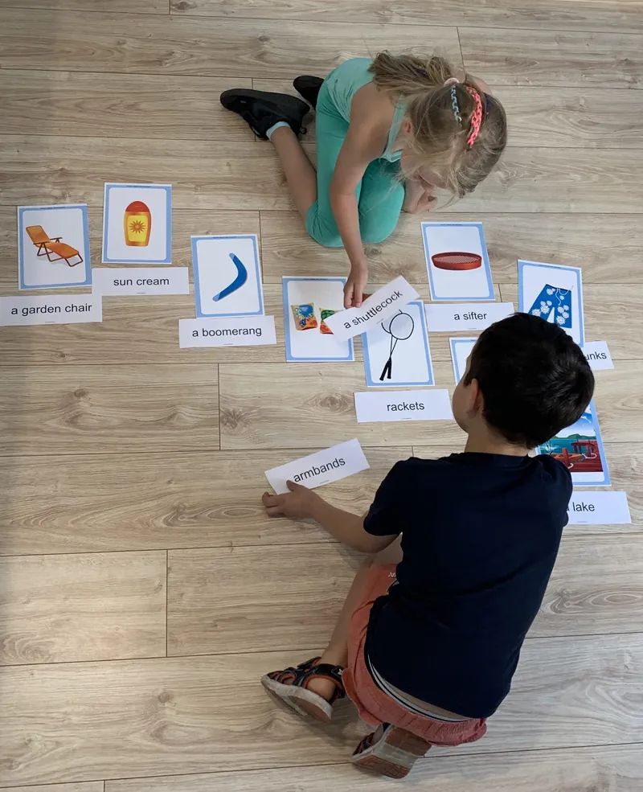
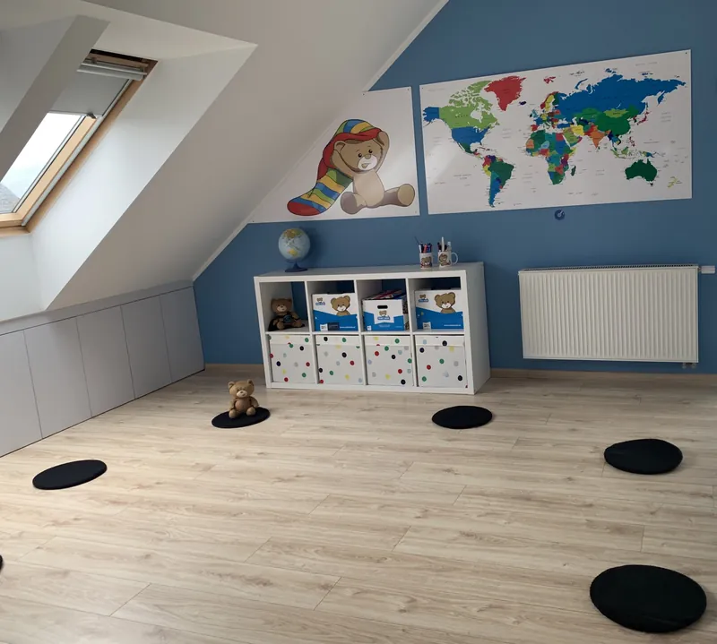
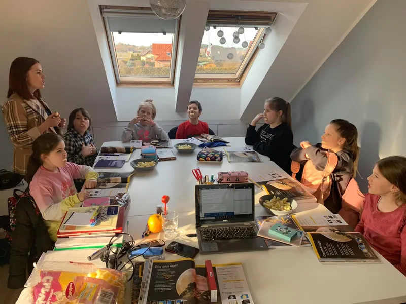
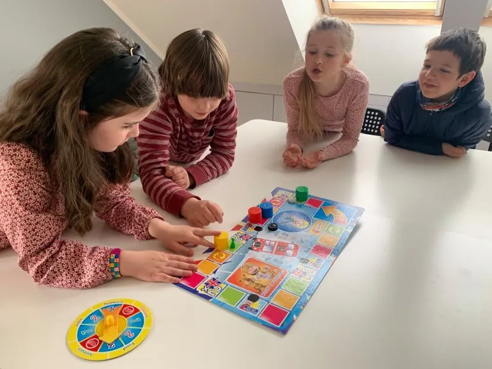
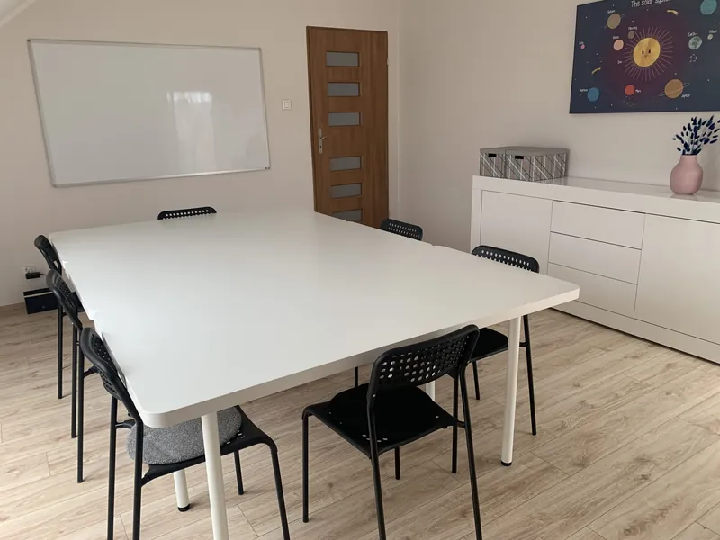
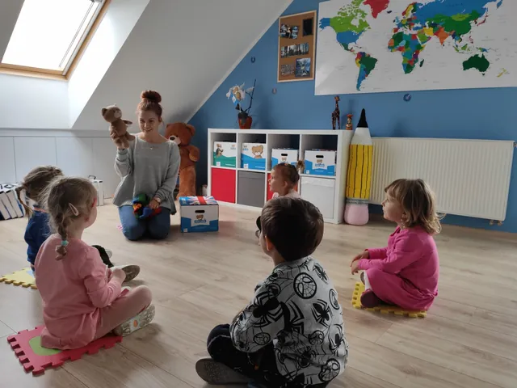
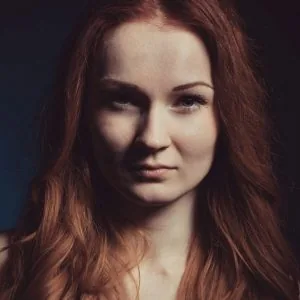
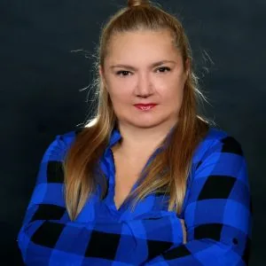
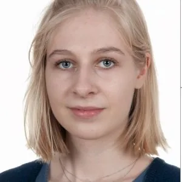

Hello!
Angielski
Dla dzieci od 2. klasy szkoły podstawowej, młodzieży i dorosłych. Kursy na materiałach National Geographic, które uczą swobodnej rozmowy.
Wystarczy, że masz chęci. Resztę zostaw nam.
Angielski, niemiecki, francuski i hiszpański dla dzieci od 2 lat, młodzieży i dorosłych.
Zapisz się na kursUczymy z pasją: w komfortowej i przyjaznej atmosferze, metodą dobraną do wieku i poziomu, tak żeby chciało się przychodzić na kolejne zajęcia.
Dla dzieci od 2. klasy szkoły podstawowej, młodzieży i dorosłych. Kursy na materiałach National Geographic, które uczą swobodnej rozmowy.
Bez szkolnego schematu: zamiast standardowego podręcznika ciekawe materiały, dzięki którym postępy widać z zajęć na zajęcia.
Nauka, która wciąga: inspirujące materiały i lektor, który dopasowuje tempo do grupy i do Twoich celów.
Najmłodszy język w Fabryce: zajęcia prowadzi lektorka hiszpańskiego, na materiałach, które motywują do dalszej nauki.

Gry, zabawy ruchowe, piosenki, historyjki i zabawki dydaktyczne. Dzieci świetnie się bawią, a przy okazji uczą się języka, który zostanie z nimi na całe życie. Rodzic na bieżąco wie, jakie postępy robi jego pociecha.
Każdy kurs to 62 lekcje. Zestaw kursanta i materiały online są w cenie kursu.
Zapytaj o miejsce w grupieZnajomość choćby jednego języka obcego to klucz, który otwiera świat: podróże, pracę, rozmowy z ludźmi z różnych zakątków globu. Fabryka Języka powstała, bo w okolicy Trzcianki brakowało lektorów, którzy łączą solidną wiedzę z umiejętnością jej przekazania.
Uczymy w komfortowych, jasnych salach na osiedlu Poniatowskiego. Najmłodsi mają własną salę z zabawkami, mapą świata i Misiem, starsi kursanci uczą się w sali z dużym stołem i tablicą.
Języki obce od zawsze były moją pasją, a powołaniem jest zaszczepianie tej pasji w kolejnych osobach. Agata Kurowska, założycielka szkoły, lektorka angielskiego, niemieckiego i francuskiego





Nauczycielki, dla których język to nie tylko zawód. Metody dobierają do wieku, doświadczenia i poziomu kursanta.


